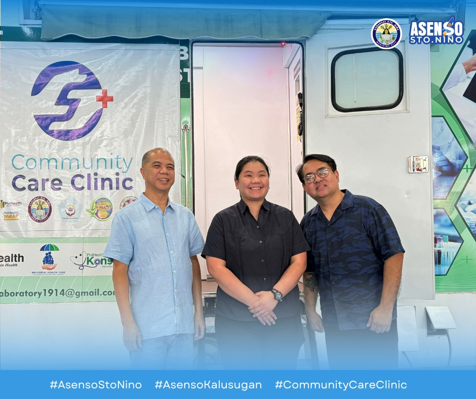
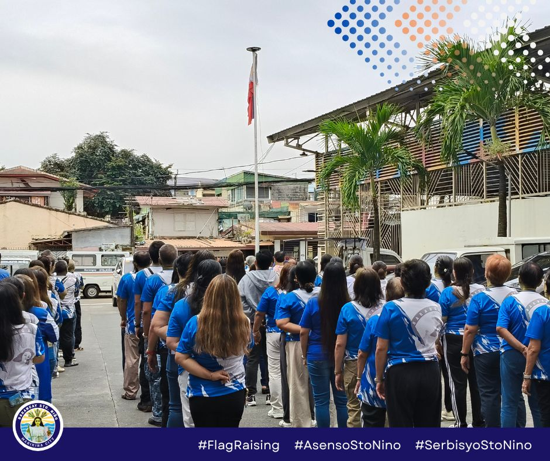
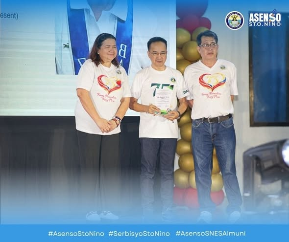
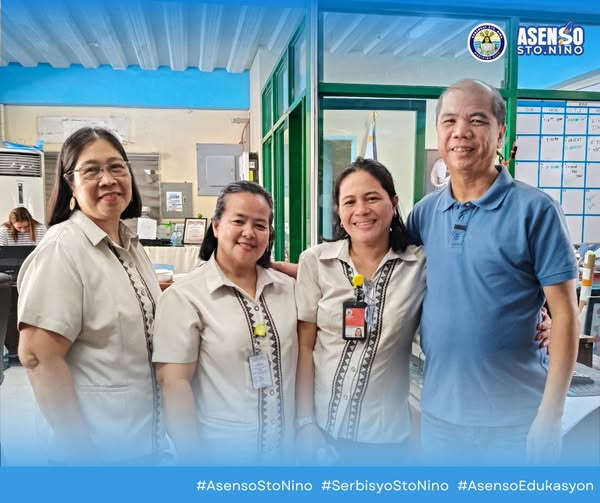
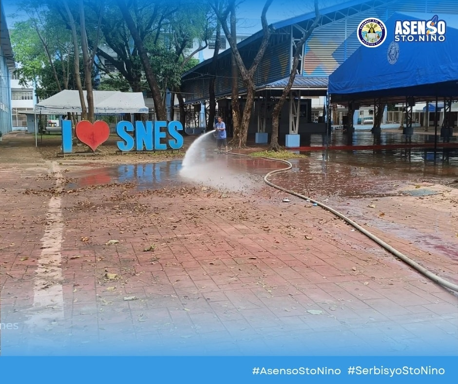

Your Voice. Your Community. Your News.
March 14, 2026 | Edition 1 | Brgy. Sto. Nino, Marikina City
Free and subsidized health services launched in Barangay Sto. Niño

Barangay Sto. Niño congratulates its community partners for the successful opening of the Community Care Clinic held on March 6 at the Barangay Hall Grounds. The event was led by Barangay Captain Zaldy Josef together with barangay health workers and volunteers who supported the program. The initiative aims to bring healthcare services closer to residents in the community. The Community Care Clinic, with the theme “Healthy Mind, Happy Life,” features a clinic-on-wheels facility that will travel to different areas of the barangay to provide free or subsidized health services. These services include medical consultations, basic health check-ups, and health education for residents. This program proves that when the barangay and community work together, it becomes possible to build a healthier, more active, and happier community for everyone.
Program highlights Women’s Month celebration and fire prevention awareness

Barangay Sto. Niño recently held its March Flag Raising Ceremony, emphasizing commitment to meaningful public service for the community. The monthly event gathered barangay officials, employees, and volunteers who continue to support local programs and initiatives. One of the highlights of the program was the celebration of Women’s Month, recognizing the important role, strength, and contributions of women in the barangay and in society. The barangay leadership reaffirmed its support for gender equality, respect, and recognition of women’s rights and abilities. Officials also reminded residents that March is Fire Prevention Month, encouraging citizens to remain cautious and responsible to prevent fire incidents. Fire volunteers are continuously undergoing training and exercises to improve their readiness and response capabilities in emergencies.
Kagawad Roy Delgado and Dr. Danilo Cruz honored for outstanding public service

Two respected members of the Barangay Sto. Niño community were recently recognized for their dedication to public service during the 11th Sto. Niño Alumni Homecoming held on February 14, 2026. Kagawad Roy R. Delgado received recognition for his long-standing service to the community. Since 1996, he has served as a barangay leader and also worked as Barangay Administrator from 1996 to 2023, showing commitment and leadership throughout the years. Meanwhile, Dr. Danilo R. Cruz, the Head Physician of Sto. Niño Health Center, was honored for his contributions in medicine and public service. Through his work, he continues to provide quality and compassionate healthcare services to residents of the barangay. The recognition highlights how their dedication and service continue to inspire and positively impact the entire community.
Dedicated educators recognized for their commitment to student development

Several teachers from Sto. Niño Elementary School were recently promoted in recognition of their dedication and hard work in the field of education. Among those promoted were Ma’am Janice Guance, Ma’am Gloria Diaz, and Ma’am Ginalyn Dumlao. Their promotions reflect their years of commitment to shaping young minds and providing quality education to students in the community. The teachers expressed their gratitude for the recognition and support they have received throughout their careers. Their achievements serve as inspiration for fellow educators and students alike. The barangay also congratulated the teachers and recognized their continued contribution to the progress of education in Sto. Niño.
Flushing and misting operations ensure safety after alumni homecoming event

Barangay Sto. Niño recently conducted flushing and misting operations at Sto. Niño Elementary School following the Alumni Homecoming event held on February 14. The activity aimed to ensure the cleanliness and safety of the school environment before students and teachers resumed their regular activities. Barangay personnel and volunteers worked together to clean and disinfect various areas of the school facilities. The initiative reflects the barangay’s commitment to protecting the health and well-being of the community. By maintaining clean and sanitary spaces, local officials hope to prevent the spread of illness and provide a safer learning environment for students. The program is part of the barangay’s ongoing efforts to support education and public health.